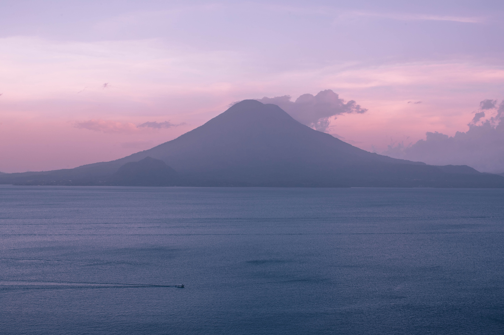
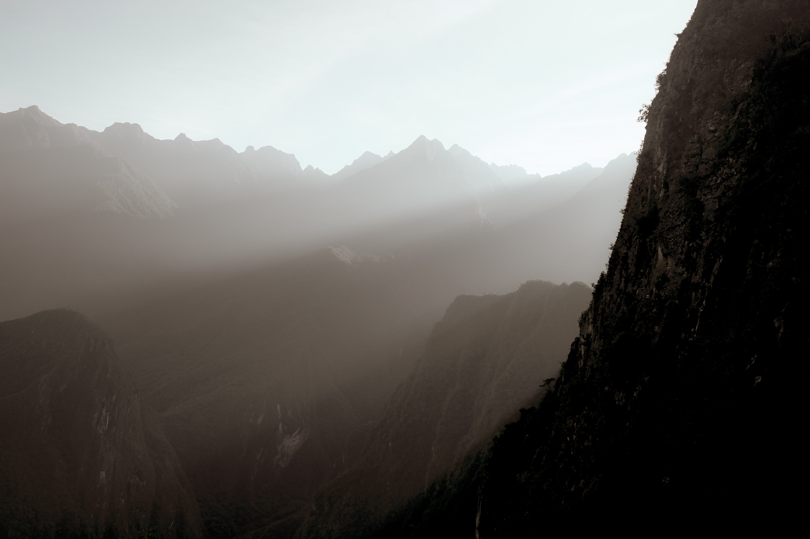
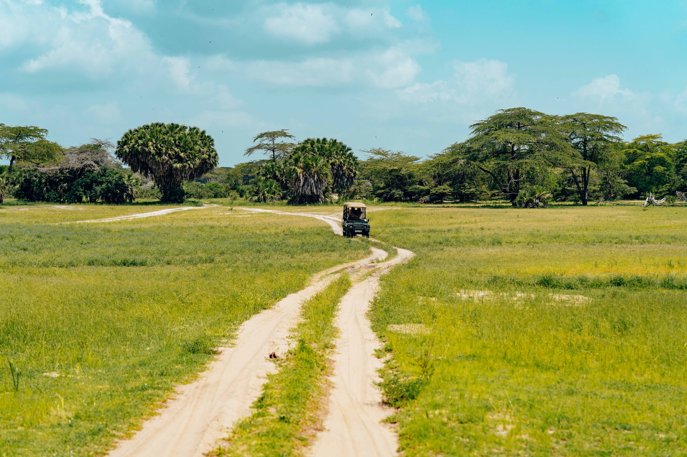

Welcome
This website aims to delve into the carbon offsetting initiatives of Shell, one of the world's largest energy companies, and critically examine the claims made by the company regarding its offsetting practices. While Shell presents itself as a responsible actor in addressing climate change through carbon offsetting, there are questions and concerns that deserve a closer look.
Our objective is to provide you with a comprehensive analysis of Shell's carbon offsetting strategies, exploring the potential discrepancies between rhetoric and reality. By examining the available evidence and considering various perspectives, we aim to shed light on the effectiveness and integrity of Shell's offsetting claims.
Carbon offsetting, as a practice, has garnered both support and scepticism. While proponents argue that it offers a pathway to compensate for emissions and support environmental projects, sceptics question its ability to achieve significant emissions reductions and emphasise the importance of tackling emissions at their source.
In the case of Shell, we aim to address several critical aspects. Firstly, we will scrutinise the emissions reductions achieved through Shell's offsetting initiatives and assess whether they are commensurate with the company's overall emissions. Additionally, we will examine the nature and quality of the offset projects supported by Shell, evaluating their long-term viability and contribution to mitigating climate change.
Transparency will be a key focus of our investigation. We will seek to unravel the methodologies employed by Shell to calculate and report its carbon offsets, assessing the rigour of the verification and certification processes. By analysing the available data and engaging with expert opinions, we aim to bring clarity to the level of transparency exhibited by Shell in its offsetting practices.
Furthermore, we will explore the wider implications of carbon offsetting, considering the potential risks of greenwashing and the broader role of fossil fuel companies in the transition to a sustainable future. We aim to foster an informed dialogue around the effectiveness of carbon offsetting as a mechanism for addressing climate change and encourage a critical assessment of Shell's claims.
We invite you to join us on this investigative journey as we delve into the details, examine the evidence, and unravel the complex landscape of Shell's carbon offsetting practices. Together, we can gain a deeper understanding of the challenges and opportunities surrounding carbon offsetting and its role in shaping a more sustainable world.

Darkwoods Conservation Area
Start of crediting period: 01/04/2008
End of crediting period: 31/03/2018
This area of 54,792 hectares of ecologically-important Boreal forestland, with benefits to the climate, community, and biodiversity was conserved prior to the sale of carbon offsetting credits.
Shell and their chosen verification scheme claim that 147000 carbon credits are generated each year however the Canadian Auditor General for this project estimates that this value has overestimated logging in the baseline scenario by 30%.
Despite the region being under conservation protection, small groups of prospectors and miners are occasionally active on the property.
The carbon credit verification scheme claims that the impact of recent wildfires was accounted for in the models they used to calculate the carbon value, however these models are not publicly accessible and non verifiable. The scheme has a carbon buffer of just 10% which is significantly lower than many other conservation projects.

Guatemala Conservation Coast
Start of crediting period: 01/04/2012
End of crediting period: 31/03/2042
As a wintering and stopover site for 120 species of migratory birds, Izabal, on the Caribbean coast of Guatemala; it is crucial for biodiversity conservation.
Here, Shell is helping finance new nature reserves while supporting existing natural forest, which is under threat from deforestation activities. The project protects almost 59,341 hectares of forest coast along with widespread conservation of biodiversity.
However, satellite imaging from Google Earth Pro raises doubts about whether the project has delivered on its promise to reduce deforestation. Inspection of the data shows tree loss within the project zone over the crediting period.
The images, taken using Google Earth pro, show two areas of the project zone (within the red line). The first area; taken in 2011, top left, and 2017, bottom left. The second area; taken in 2015, top right, and 2020, bottom right.

Cordillera Azul National Park
Start of crediting period: 08/08/2008
End of crediting period: 07/08/2028
Located in Peru's high forest between the Andes and the Amazon basin, this Cordillera Azul National Park project protects up to 1.3 million hectares of threatened rainforest habitat, safeguarding 28 “High Conservation Value” species that live in the habitat. Alongside preventing more than 25 million tonnes of carbon being released into our atmosphere to date, the project supports 440 communities living in the project zone, including 30 indigenous communities.
However, the area was already a national park that had protected status for seven years before it started claiming credits, with the developing agency even writing that “no illegal logging activities were observed since 2006”. Satellite mapping shows tree canopy loss has actually more than doubled since the program launched, in areas close to a park boundary or rivers, which are more accessible and so vulnerable to logging (Davey, 2023).


Experts say that the program inflated the projected benefits from the start by oversampling the lowland valleys and floodplains as well as overestimating population growth in the area (Davey, 2023). This led to a higher figure for prevented emissions enabling more credits to be sold.
In contrast to one of the project’s primary aims of community protection, a formal communication was submitted by the UN Committee on the Elimination of Racial Discrimination (CERD) in April 2023 to the Peruvian state regarding impacts on the human rights and territories of the Kichwa people and other Indigenous peoples (Jenner, 2023). This was in response to the submission of a formal petition by Kichwa organisations in August 2022, which included claims of abuse and discrimination by Park managers (Davey, 2022).
Davey, E. (2022) In Peru, Kichwa tribe wants compensation for carbon credits, 22 December. Available at: https://apnews.com/article/business-peru-forests-climate-and-environment-2c6cddb1707a12c31c14d9a226699068 (Accessed: 21 June 2023).
Davey, E. (2023) ‘Gone wrong’: Doubts on carbon-credit program in Peru forest, 30 March. Available at: https://apnews.com/article/peru-cordillera-azul-carbon-credits-deforestation-d02b39c4f90896c29319f31afef11b2d (Accessed: 21 June 2023).
Jenner, F. (2023) UN Questions Peruvian State Over Violations of Indigenous Rights in Cordillera Azul National Park and REDD+ Project, 4 May. Available at: https://www.forestpeoples.org/en/news/2023/Peru-un-cerd-questions-state-indigenous-rights-pncaz-REDD (Accessed: 21 June 2023).

The Mai Ndombe REDD+ Project
Start of crediting period: 14/03/2011
End of crediting period: 13/03/2041
In the western reaches of the Congo Basin, home to some of the most important wetlands anywhere on Earth, the Mai Ndombe REDD+ Project is working to restore areas of rainforest which were zoned for commercial timber extraction. Shell claim that this area is nearly 300,000 hectares however the Verra verification scheme only claims 249,000 hectares.
Shell claim that this project will prevent logging however there are already comments being made around the longevity of this protection as there has been significant forest loss in this protected area. “There is too much forest loss in the recent years within the project area as per the Global forest watch. Teams should carefully review this aspect.”.
Furthermore, investigations have found that the project did not obtain the free, prior and informed consent of local communities for REDD+ activities, leading to confusion and conflict in the project areas.
Hunan Afforestation Project
Nunc blandit nisi ligula magna sodales lectus elementum non. Integer id venenatis velit.

Reforestation of Degraded Grasslands in Uchindile and Mapanda, Tanzania
Start of crediting period: 01/01/2002
End of crediting period: 31/12/2100
This project spans an area of 18,379 ha of degraded grassland in the poverty stricken south-west region of Tanzania. 10,800 ha are plantable yet the region remains vulnerable to frequent anthropogenic-led wildfires. Local communities are heavily reliant on the forest for subsidence.
Shell’s project initiative is to establish sustainable logging practises and support the development of local communities by conserving the natural grasslands habitat. The project, verified by Verra and CCB, claims to generate 388,000 carbon credits on average each year, with 10% of the subsequent revenue going to communities and the remainder being reinvested in Tanzania.
Yet, we have found Shell are overclaiming their credit by over 10x. Shell claim the project generates 388,000 credits on average each year yet investigation of Verra project documentation discovers this value to instead be 25,000 on average each year. This finds Shell is selecting to only report their most recent crediting values. Additionally, the project choses to exclude the risk of fire by stating “natural fires don’t represent a risk to the project” yet previously state the threat of anthropogenic-led fires in the area. Indeed, other accounts determine “fire has repeatedly been singled out as number one business risk to investors in commercial forestry” (Andrew, 2022).
There is also the problem of ensuring project permanence considering the political risk associated with investing in Tanzania. Recent political unrest and the threat of anthropogenic-led wildfires pose a great risk to the Uchindile and Mapanda grasslands (Dar es Salaam, 2022). Yet the project choses to exclude the risk of all types of fire by stating “natural fires don’t represent a risk to the project” despite previously stating the threat of anthropogenic-led fire in the area. Indeed, other accounts determine “fire has repeatedly been singled out as number one business risk to investors in commercial forestry” (Andrew, 2022).
{kind=link}
{kind=link}
{kind=link}
{kind=link}